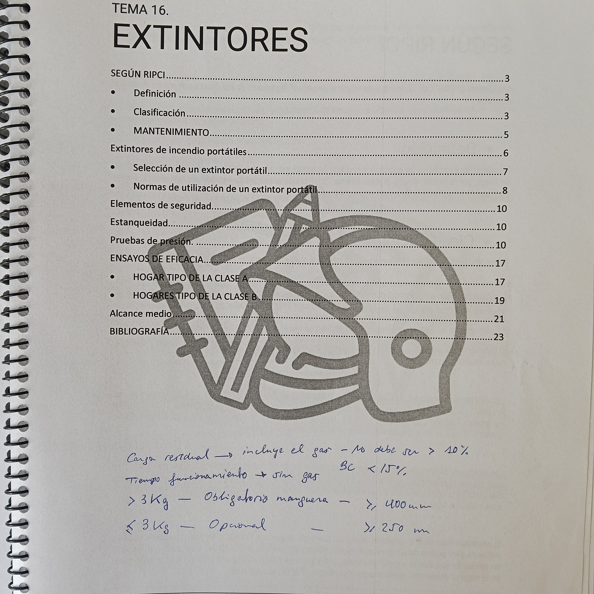

La noria y la tela
La Noria (20) pesa el extintor completo. La Tela (15) se desenrolla siguiendo el recorrido hasta el equipo.
20 kg incluye el límite del portátil. 15 m es el máximo de recorrido del RIPCI.
Elige el agente según el fuego, interpreta la etiqueta y repasa los ensayos de eficacia.
12 bloques de estudio, 36 tarjetas y 36 preguntas con explicación.
Sin coincidencias. Prueba con «manguera», «polvo» o «eficacia».
El extintor proyecta un agente sobre el fuego gracias a la presión interna. Debe quedar visible, accesible y cerca de los puntos de mayor probabilidad de incendio, preferiblemente cerca de las salidas de evacuación y sobre un soporte fijado a un paramento vertical.
Referencias vigentes. Para comercialización de equipos a presión, el RIPCI remite al RD 709/2015. La certificación de portátiles remite a UNE-EN 3-7 y UNE-EN 3-10. Para los móviles se cita UNE-EN 1866-1. La foto de la p. 3 reproduce la referencia anterior al RD 769/1999.
Un generador de aerosol puede utilizarse como extintor cuando satisface los requisitos de su reglamentación y cuenta con una evaluación técnica favorable para ese uso, en los términos del RIPCI.
La Noria (20) pesa el extintor completo. La Tela (15) se desenrolla siguiendo el recorrido hasta el equipo.
20 kg incluye el límite del portátil. 15 m es el máximo de recorrido del RIPCI.
La masa del extintor en funcionamiento y la longitud real del recorrido horizontal, respectivamente.
| Clase | Ejemplo | Agente que puedes encontrar |
|---|---|---|
| A | Madera o papel | Agua o polvo ABC con eficacia A. El agua aporta enfriamiento. |
| B | Gasolina o un sólido licuable | Espuma, polvo BC o ABC, o CO₂ cuando el equipo indique aptitud B. |
| C | Propano o butano | Polvo con aptitud C. En una fuga incendiada, la intervención se coordina con el corte del suministro para evitar la acumulación de gas. |
| D | Magnesio u otro metal combustible | Agente específico para el metal. La aptitud D de un equipo no implica que sirva para cualquier metal. |
| F | Aceite de freidora | Extintor marcado F, típicamente con agente químico húmedo. El agua a chorro puede proyectar aceite ardiendo. |
Riesgo eléctrico. La tensión añade un riesgo y la letra de clase sigue describiendo el combustible. Prioriza el corte seguro de la corriente. Si procede el uso con tensión, comprueba la aptitud, el voltaje y la distancia que indique el fabricante. El CO₂ no deja residuo sólido y obliga a tener en cuenta el frío de la descarga y la acumulación de gas en espacios cerrados.
La tabla de la foto de la p. 8 procede del reglamento anterior y solo recoge A–D. La p. 4 recoge la clase F. Las referencias al halón pertenecen al material histórico.
F. Busca un equipo que indique expresamente aptitud para esa clase.
El CO₂ aporta su propia presión. En muchos equipos de agua o polvo, un gas impulsor ocupa la cámara superior y empuja el agente por el tubo sonda al abrir la válvula. El temario también describe equipos históricos de agente licuado con presurización adicional.
El ejemplo de agua o polvo incorpora manómetro. En el CO₂, la carga se comprueba por pesada.
El agente extintor del recipiente está inicialmente a presión atmosférica. El botellín, interno o externo, guarda el gas a presión. Tras activar el botellín, el gas impulsa el agente y se controla la descarga según el diseño del equipo.
Partes que debes identificar. Cuerpo, agente, gas impulsor, tubo sonda, maneta fija, palanca, seguro, manguera y boquilla.
Esquema de presión permanente · p. 6 ↗Esquema con botellín auxiliar · p. 7 ↗
Cuando se libera el gas impulsor del botellín. Hasta ese momento, el agente del recipiente principal está a presión atmosférica.
| Plazo | Operaciones |
|---|---|
| 3 meses | Ubicación, daños, adecuación al riesgo, acceso, señal, legibilidad, presión en zona de operación cuando haya indicador, partes externas, precinto e indicios de descarga. Puede intervenir el titular o el personal del fabricante o mantenedor en las condiciones del RIPCI. |
| 1 año | Programa anual UNE 23120. En móviles también se revisa el sistema de traslado. |
| 5 años | Prueba de nivel C por empresa mantenedora habilitada. El RIPCI prevé tres retimbrados desde el timbrado inicial. El año 20 marca el fin de la vida útil. |
La referencia vigente para las inspecciones periódicas es el anexo III del RD 809/2021. La página 5 menciona el RD 2060/2008. El mantenimiento anual y las inspecciones de presión corresponden a programas distintos.
El Humo (3) señala la revisión trimestral. Una Ola (5) recuerda la prueba hidrostática quinquenal. La Noria (20) cuenta los años desde la fabricación.
La comprobación trimestral revisa que el equipo esté en condiciones de uso. El retimbrado es una prueba de nivel C cada cinco años.
La distancia depende de la etiqueta, el agente y la situación. La corta duración de la descarga explica por qué importa elegir bien el primer punto de aplicación.
Puede desplazar o salpicar el combustible ardiendo y ampliar la superficie afectada.
El aparato funciona en su posición normal, sin invertirlo. El disparo se sitúa arriba y puede haber control al final de la manguera. El seguro evita disparos involuntarios y el precinto permite detectar su retirada. El temario da 20–100 N para la maniobra de retirada del seguro. Cuando el soporte se suministra con el extintor, su ensayo contempla al menos el doble del peso total del equipo.
El manómetro señala la zona de operación en verde. La carga de CO₂ se comprueba por pesada y su válvula cuenta con un dispositivo de seguridad. La bocina separada incorpora empuñadura de protección térmica. En los equipos a base de agua se describe un filtro para retener partículas antes del paso más estrecho.
El material cita 18,63 MPa para el disco de seguridad de CO₂ descrito y 0,80 veces la presión de prueba para la válvula del extintor sin presión permanente de más de 3 L. En el apartado de pruebas, anota 24,52 MPa para extintores y botellines de CO₂, 22,06 MPa para botellines de nitrógeno y 1,35 veces la presión de servicio para los demás extintores. Son cifras del temario. Para una inspección real se consulta el reglamento vigente y la presión de prueba que corresponda al equipo.
Se aplica a la carga de agente. Para clasificar portátil o móvil se usa la masa del equipo en funcionamiento.
| Ensayo o condición | Qué indica el temario |
|---|---|
| Acondicionamiento | Al menos 24 h a 20 ± 5 °C y ensayo antes de transcurrir 5 min desde la retirada del almacén. El polvo se asienta con el procedimiento previo indicado. El ensayo de tiempo y carga residual se hace con tres muestras. |
| Temperaturas límite | Tmáx. de 60 °C o superior. Para agua sin protección contra la congelación, Tmín. de +5 °C. Para CO₂ la duración a Tmáx. no supera la de 20 °C y a Tmín. no supera 2,5 veces la de 20 °C. |
| Pérdidas | La p. 13 distingue hasta 6 % anual por volumen de gas expandido, hasta 5 % anual de la carga para comprobación por pesada y hasta 5 cm³/min por kg o litro de carga en aparatos presurizados al activar. |
| Dieléctrico | Para los equipos a base de agua que se someten a ese ensayo, la corriente medida durante la descarga es como máximo 0,5 mA en las condiciones descritas. La etiqueta especifica la aptitud del modelo. |
Tiempo de funcionamiento: corresponde a la descarga del agente. La anotación manuscrita de la p. 2 recuerda que la salida final de gas impulsor se excluye del tiempo. La p. 17 describe pesadas para determinar el agente que queda.
Una Tela (15) recoge el polvo BC residual. Un Toro (10) recoge los demás agentes.
15 % y 10 % son máximos de carga residual en el ensayo a temperaturas límite.
La carga residual se mide tras una descarga de ensayo. La fuga es una pérdida medida a lo largo del tiempo o tras la presurización en el ensayo correspondiente.
El temario indica cuerpo rojo RAL 3000 y contempla una zona de color de hasta el 10 % si la reglamentación nacional la requiere o permite para identificar el agente. Para decidir si el equipo sirve, lee la eficacia, los pictogramas y las limitaciones.
En la parte de limitaciones de la etiqueta, con el voltaje y la distancia indicados para ese aparato.
El temario describe un bastidor de 250 mm de alto y 900 mm de ancho, con 14 capas alternas de pino silvestre y vigas transversales de 500 mm. El número del hogar coincide también con el número de vigas transversales por capa par. Los tamaños superiores a 27 A se componen con hogares menores. El mayor hogar indicado es 55 A.
Tras la extinción deben transcurrir tres minutos de observación sin llamas. La serie termina tras dos ensayos si ambos tienen el mismo resultado. Si el primero y el segundo difieren, el tercero decide.
Un Nido (21) se apoya sobre una pila de madera que mide 21 decímetros de largo.
Superó el ensayo del hogar de madera 21 A, cuya longitud es de 21 dm. La cifra representa el tamaño del hogar tipo.
| Hogar | Montaje que describe el temario |
|---|---|
| B | Bandeja circular de acero. El agua ocupa 10 mm y el combustible 20 mm. El mayor hogar citado es 233 B. Para que el ensayo sea válido debe quedar combustible en el recipiente. |
| F | Recipiente que simula una sartén profunda. Se ensaya con aceite vegetal comestible y aparecen los tamaños 5 F, 25 F, 40 F y 75 F. |
| C | En el temario aparece como aptitud relativa al fuego de gases y sin un número de hogar equivalente a A, B o F. |
Ejemplo de la proporción B: un hogar de 144 L contiene 48 L de agua y 96 L de combustible. El número expresa el volumen de ensayo del hogar, independiente de la cantidad de agente extintor dentro del aparato.
55 B indica 55 L de líquido total de ensayo. 25 F indica 25 L de aceite en el hogar F.
| Agente del temario | Alcance | Duración |
|---|---|---|
| Agua a chorro | 8–10 m | 30–90 s |
| Agua pulverizada | 2 m | 20–60 s |
| Espuma física | 6–8 m | 1 min |
| CO₂ | 1–1,5 m | 8–30 s |
| Polvo | 5 m | 6–20 s |
Usa estas cifras para comparar los ejemplos de la p. 22. El alcance medido en el ensayo y la distancia segura de aplicación son magnitudes distintas.
Polvo, 5 m. CO₂, entre 1 y 1,5 m.
CTE y riesgo especial. La nota (1) de la tabla 1.1 exige un extintor cerca del acceso por el exterior de la zona. En el interior, el recorrido real hasta un extintor, incluido el exterior, es como máximo de 15 m en riesgo bajo o medio y de 10 m en riesgo alto.
Industria. El RD 164/2025 exige portátiles en los sectores de incendio y contempla la excepción justificada de determinadas zonas de almacenamientos automatizados inaccesibles. La eficacia se calcula con las tablas 3.4.1 y 3.4.2. Para clase A en riesgo intrínseco alto, la tabla parte de 34 A hasta 300 m² y añade un extintor por cada 200 m² o fracción de exceso.
El apartado industrial fija hasta 15 m desde cualquier punto del sector. Para áreas de incendio de tipo D contempla hasta 25 m y exceptúa las de riesgo intrínseco bajo 1. Comprueba el régimen aplicable si el establecimiento ya existía al entrar en vigor el reglamento.
21 A–113 B es la eficacia de la dotación general del CTE. Las tablas del RSCIEI determinan la dotación industrial según la clase de fuego y las condiciones del sector.
Intenta explicar cada bloque; vuelve al desarrollo cuando te falte una relación o un matiz.
Di la respuesta en voz alta. «Lo recuerdo» programa el siguiente repaso en 1, 3, 7 o 14 días; «Repetir hoy» la mantiene pendiente.
Practica las cifras del temario y la aplicación del RIPCI, el CTE y el RSCIEI. Elige un bloque o responde las 36 preguntas.
Los dos archivos ZIP reúnen 22 fotos del Tema 16 de Academia Bomberos (2020), desde el índice de la p. 2 hasta la bibliografía de la p. 23. Los números corresponden a las páginas impresas.

Imagina la escena y después di la cifra con su unidad sin mirar.